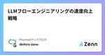
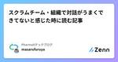
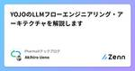
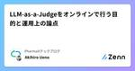
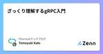
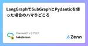
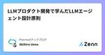
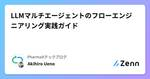
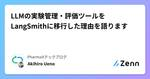
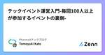

PharmaXテックブログのフィード
https://zenn.dev/p/pharmax
PharmaXエンジニアチームのテックブログです。エンジニアメンバーが、PharmaXの事業を通じて得た技術的な知見や、チームマネジメントについての知見を共有します。 PharmaXエンジニアチームやメンバーの雰囲気が分かるような記事は、note（https://note.com
フィード

LLMフローエンジニアリングの速度向上戦略 1
1
PharmaXテックブログのフィード
こんにちはPharmaXの上野(@ueeeeniki)です。これまでLLMのフローエンジニアリングに関するシェアを何度か行ってきました。https://zenn.dev/pharmax/articles/a6e6d4d167a4a4https://zenn.dev/pharmax/articles/13a22c764f2df3https://speakerdeck.com/pharma_x_tech/flow-engineering-in-multi-agent-llm-chat-application-03dd5337-87fd-4fa1-b4de-96cf9f50e001L...
14時間前

スクラムチーム・組織で対話がうまくできてないと感じた時に読む記事 1
PharmaXテックブログのフィード
はじめにこんにちは。PharmaXでエンジニアリングマネージャーをしている古家(@enzerubank)です。自分は生産性の高い組織を作ることへの興味が強いのですが、組織作りについて調べていると対話の重要性を耳にすることが多いです。大手テック企業など成熟した組織にいた経験のある人だと自然と対話ができているチームにいた場合が多いので、対話が上手くできていないというチームに遭遇すると違和感を覚えることもあると思います。まだ組織が成熟していないスタートアップでマネージャーをしていると「対話が上手くできていないと感じる」といったフィードバックを受けることもあり、「そもそも対話ができて...
2日前

YOJOのLLMフローエンジニアリング・アーキテクチャを解説します 2
PharmaXテックブログのフィード
こんにちはPharmaXの上野(@ueeeeniki)です。今回はPharmaXが手掛けるYOJOというサービスで実践しているLLMのフローエンジニアリングのアーキテクチャを詳しく解説したいと思います。昨日開催したイベントでも、フローエンジニアリングについてご紹介しました。https://yojo.connpass.com/event/325426/https://speakerdeck.com/pharma_x_tech/flow-engineering-in-multi-agent-llm-chat-application-03dd5337-87fd-4fa1-b4de-96...
2日前

LLM-as-a-Judgeをオンラインで行う目的と運用上の論点
PharmaXテックブログのフィード
こんにちは。PharmaXの上野です。LLMの評価についてはこれまでも何度か取り上げてきました。特に、LLMの評価について基礎から整理した『LLMアプリケーションの評価入門〜基礎から運用まで徹底解説〜』LLM-as-a-Judgeについて基礎から整理した『LLMによるLLMの評価「LLM-as-a-Judge」入門〜基礎から運用まで徹底解説』は、かなりご好評をいただきました。今回は、オフライン評価で行うことの多いLLM-as-a-Judgeをオンラインで行うことの目的や実際の運用について説明したいと思います。 LLMアプリケーションの評価とはLLMをアプリケーション...
2日前
Google CloudのCompute EngineからOps エージェントでログ収集・インフラメトリクス収集をする方法 1
PharmaXテックブログのフィード
こんにちは、PharmaX エンジニアの尾崎(@FooOzaki)です。本記事ではGoogle CloudのVM(Compute Engine)のログ収集およびインフラメトリクスの収集を「Ops エージェント」を利用して実施する方法をご紹介します。 はじめに本記事ではシンプルに任意のログファイルを収集・送信する方法を中心にご説明しますが、Google Cloud の公式ドキュメントも引用しながらご説明しますので利用シーンに合わせて適宜ドキュメントも読んでいただけると良いかと思います。私はLinux環境へ導入したのでLinuxベースでのご説明になりますが、Windowsのケース等...
3日前

ざっくり理解するgRPC入門 2
PharmaXテックブログのフィード
この記事の概要こんにちは、エンジニアの加藤(@tomo_k09)です。最近、はじめてgRPCを使う機会があったので、知識ゼロの状態でもざっくりとgRPCとは何かについてイメージがつくように、gRPCとはいったい何なのかやgRPCを使った実装例についてまとめてみました。「gRPCって何かわからない」、「gRPCってなんとなく知っているけど、もう少し理解したい」という方には役に立つないようになっていると思います。これからgRPCを学びたいという方の参考になれば幸いです。 gRPCとはgRPCは、Googleが開発したオープンソースのリモートプロシージャコール（RPC）システ...
3日前

LLMによるLLMの評価「LLM-as-a-Judge」入門〜基礎から運用まで徹底解説 31
PharmaXテックブログのフィード
前回の記事でLLMアプリケーションの評価について基礎から運用まで丁寧に解説いたしました。https://zenn.dev/pharmax/articles/df59290ba875ffこの記事では、評価方法の一部であるLLM-as-a-Judgeについて詳しく解説したいと思います。LLMアプリケーションの評価といえば、LLM-as-a-Judgeだというように結びつける方もいらっしゃいますが、必ずしもそうではありません。というのも、LLMアプリケーションの評価には、LLM以外で評価するLLM-as-a-Judge以外にもいろんな方法や観点があるからです。評価方法や指標について多...
4日前

LangGraphでSubGraphとPydanticを使った場合のハマりどころ
PharmaXテックブログのフィード
はじめにこの記事では、LangGraphでSubGraphと呼ばれるネスト構造を使った際に発生した問題点について、事例を紹介しています。LangGraphについての詳細な説明は割愛しますので、LangGraphが何か知りたい方は、ぜひ次の記事を御覧ください。https://zenn.dev/pharmax/articles/8796b892eed183 環境この記事執筆時点では、以下のバージョンで実施しています。特にLangChain周りは非常に開発速度が早いため、最新バージョンを合わせてご確認ください。langgraph: 0.1.14Python: 3.10.1...
4日前

LLMアプリケーションの評価入門〜基礎から運用まで徹底解説〜 18
PharmaXテックブログのフィード
こんにちは。PharmaXの上野です。今回はLLMアプリケーションを評価する上で知っておくべき評価の基本をきちんと整理したいと思います。これまで何度かLLMアプリケーションの評価について語ってきました。https://yojo.connpass.com/event/305679/https://studyco.connpass.com/event/324522/運用についても記事や発表の形でシェアを行ってきました。https://zenn.dev/pharmax/articles/48ee897438f0e7ですが、まだまだ「評価とはなにか？」という基本的なところで躓いてし...
5日前

LLMプロダクト開発で学んだLLMエージェント設計原則 2
PharmaXテックブログのフィード
こんにちは。PharmaXの上野（@ueeeeniki）です。PharmaXでは、YOJOというサービスで複数のLLMエージェントを組み合わせたマルチエージェントの構成でチャットボットシステムを構築しています。本日は、そんなPharmaXのLLMプロダクト開発で学んだエージェント設計の原則をまとめてみたいと思います。これまでLLMプロダクト開発に関する知見を様々なところで公開してきました。YOJOのマルチエージェントの仕組みは下記の記事をご覧いただければと思います。https://zenn.dev/pharmax/articles/a6e6d4d167a4a4LLMアプリケー...
8日前

LLMマルチエージェントのフローエンジニアリング実践ガイド 2
PharmaXテックブログのフィード
PharmaXでは、YOJOというサービスで複数のLLMエージェントを組み合わせたマルチエージェントの構成でチャットボットシステムを構築しています。組み合わせると言っても曖昧ですが、具体的には、LLMの出力結果に基づいて、次の処理を分岐したり、分岐によってLLMを呼び分けたりするフローエンジニアリングと呼ばれる手法を用いています。フローエンジニアリング自体は徐々に知られつつある概念ですが、日本語で解説した記事や実用事例の紹介がないので、今回はガッツリ解説してみようと思います。https://zenn.dev/kun432/scraps/77ba60d055cd93https://...
9日前

LLMの実験管理・評価ツールをLangSmithに移行した理由を語ります 1
PharmaXテックブログのフィード
これまでPharmaXでは、LLMの実験管理・評価ツールにPromptLayerを使ってきました。下記の記事でも運用についてシェアしてきました。https://zenn.dev/pharmax/articles/27915681d4ba57https://zenn.dev/pharmax/articles/d31c1068450cd5ですが、現在LangSmithへの移行を行っている（2024/7現在では完全移行は完了していない）ので、なぜ移行する意思決定をしたのかの理由を語りたいと思います。 LangSmithとはLangSmithを全くご存じない方もいらっしゃるかもしれ...
10日前

テックイベント運営入門-毎回100人以上が参加するイベントの裏側- 1
PharmaXテックブログのフィード
この記事の概要こんにちは、エンジニアの加藤(@tomo_k09)です。開発業務をしながら、PharmaXのテックイベント運営も担当しています。PharmaXでは毎月オンラインでテックイベントを開催しているのですが、毎回100人以上参加していただけるまでになりました。そこでこの記事では、PharmaXのテックイベントはどのように運営されているのかについてご紹介します。エンジニア向けのテックイベント運営に携わっている方やこれからイベント運営をしたいという方の参考になれば幸いです。 PharmaXではどのようなイベントを開催しているのかPharmaXでは、企業様をお招きし、毎...
11日前

スクラムチームがアウトカムって結局何なの？となった時に読む記事
PharmaXテックブログのフィード
はじめにこんにちは。PharmaXでエンジニアリングマネージャーをしている古家(@enzerubank)です。スクラムチームが順調にデリバリーできるようになった頃に、このままではビルドトラップに陥るのでアウトカム志向の開発をしようと言われることがあると思います。色んな登壇資料でもアウトカムのためのプロダクト開発をすべきで、アウトプットだけに固執してはいけないという趣旨の内容を見かけることがあります。今まで自分自身、アウトカム=ビジネス上の成果や結果という曖昧なイメージしか持っていなかったので、「アウトプットよりアウトカムを目的にしよう」という話はそれはそうだよなと思いつつ、解...
17日前
LangGraphおけるNodeの並列実行について
PharmaXテックブログのフィード
この記事の概要こんにちは。PharmaX でエンジニアをしている諸岡（@hakoten）です。この記事では、大規模言語モデル（LLM）を活用したアプリケーションの開発を支援するフレームワークであるLangChain内にあるツールの一つ、LangGraphを使ってNodeを並列に実行した時の挙動や注意すべき点について、紹介しています。LangGraphの基本的な使い方の記事をいくつか書いてますので良ければ、こちらもご覧ください。https://zenn.dev/pharmax/articles/8796b892eed183https://zenn.dev/pharmax/ar...
18日前
LangGraphでグラフから別のグラフを呼び出す
PharmaXテックブログのフィード
この記事の概要こんにちは。PharmaX でエンジニアをしている諸岡（@hakoten）です。この記事では、大規模言語モデル（LLM）を活用したアプリケーションの開発を支援するフレームワークであるLangChain内にあるツールの一つ、LangGraphを使ってグラフからグラフを呼び出すネスト構造を作る方法についてご紹介します。LangGraphの基本的な使い方については、以下の記事もぜひご覧ください。https://zenn.dev/pharmax/articles/8796b892eed183 環境この記事執筆時点では、以下のバージョンで実施しています。とくにLa...
1ヶ月前
Identity Platformのマルチテナンシー機能を本番環境で運用した学び
PharmaXテックブログのフィード
こんにちは、エンジニアの加藤(@tomo_k09)です。PharmaXが提供する薬局オペレーションを効率化するためのシステムを提供しています（以下、薬局OS）。このサービスではFirebaseAuth + Identity Platformのマルチテナンシー構成でテナントごとにユーザーの管理を行なっています。この記事では、FirebaseAuth + Identity Platformのマルチテナンシー構成でテナントごとにユーザー管理をしてみて感じたことをまとめてみました。 マルチテナンシーとはマルチテナンシーは、1つのソフトウェアやサービスを複数のユーザー（テナント）が独立...
1ヶ月前
LangGraphの基本的な使い方
PharmaXテックブログのフィード
この記事の概要こんにちは。PharmaX でエンジニアをしている諸岡（@hakoten）です。この記事では、大規模言語モデル（LLM）を活用したアプリケーションの開発を支援するフレームワークであるLangChain内にあるツールチェインの一つ、LangGraphについてご紹介します。LangChainがどのようなものかについて知りたい方は、ぜひ一読していただけると幸いです。※ LangGraphは、LangChainとシームレスに連携できるライブラリですが、この記事ではLangGraph自体の入門内容に焦点を当てており、LangChainについては詳しく触れませんので、ご了承...
1ヶ月前
分析用ログをCloud Storageにアップロードして、Dataflow経由でBigQueryへ格納する
PharmaXテックブログのフィード
この記事の概要こんにちは。PharmaX でエンジニアをしている諸岡（@hakoten）です。本記事では、Google Cloud上で Cloud Storageへアップロードされたログファイルを「Dataflow」というサービスを使用してBigQueryへ転送する方法についてご紹介します。データパイプラインの構築や、Dataflowのサービスに興味がある方は、ぜひご覧ください。 今回作成するデータパイプラインの説明弊社サービスでは、アプリケーションログをBigQueryへ転送し、データ分析を行っています。そのためのデータパイプラインは大まかに以下のようになります。今...
2ヶ月前
LLMによるLLMの評価（LLM as a judge）の精度改善のためのプロンプトエンジニアリング
PharmaXテックブログのフィード
LLM-as-a-JudgeとはLLMをアプリケーションに組み込んでいると、LLMの出力を評価する必要が出てきます。LLMの「出力は確率的である（毎回異なる）」ためです。また、LLMの出力はハルシネーションを含む可能性がありますし、間違いではないにしてもサービス提供者の意図とは違った出力をエンドユーザーに提示してしまうかもしれません。LLMの出力を評価して、出力が適切でないことを判定できれば、ユーザーには表示しない、出力を再度行わせる（出力をLLMに修正させるのもよいでしょう）というようなことができるようになります。ただし、LLMのすべての出力を人が評価していたのでは、手が...
2ヶ月前